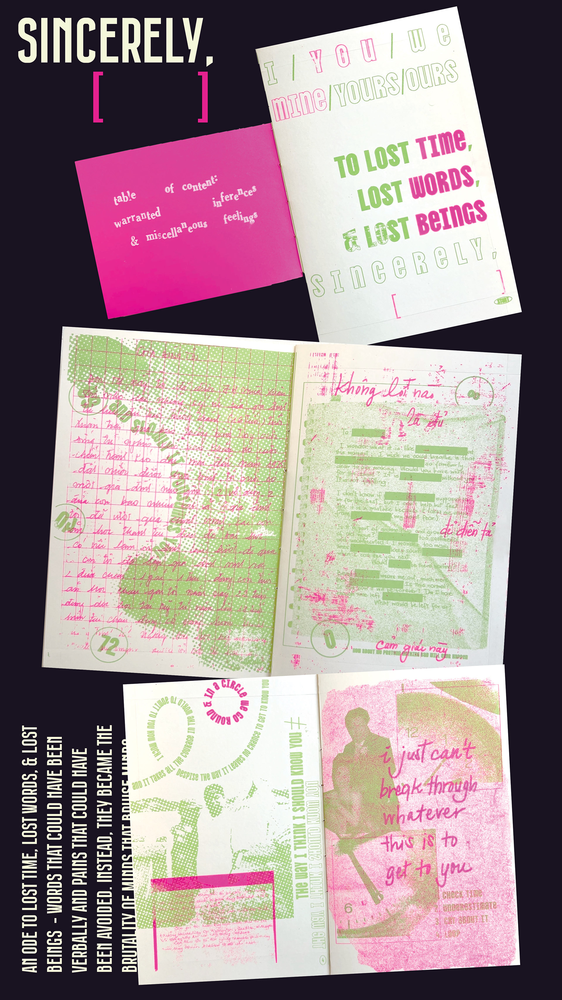

My process for this zine involved:
This zine called sincerely, yours was made using screenprinting techniques, as well as bookbinding. It is a token of my love and dedication to my family.
- Collecting photographs of my family
- Digitizing photos using the Adobe Suite
- Preparing the materials for the printmaking process:
- ↳ Prepping silkscreens
- ↳ Burning images onto screens
- ↳ Have fun pulling prints!
- Binding the zine
- Sharing with family & friends!
ദ്ദി ˉ꒳ˉ ✧
